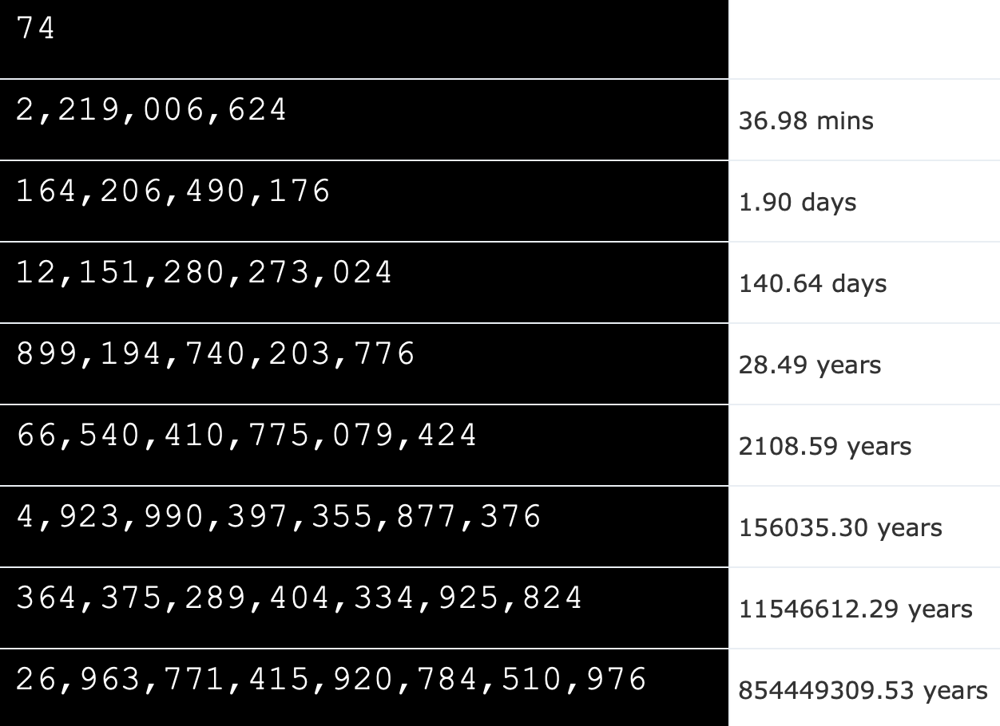

IT Sikkerhed
I forløbet havde vi meget om sikkerhed på internettet og hvordan man kunne beskytte sig mod cyberattacks. De to første moduler i forløbet brugte vi på at spille et cybersikkerhedsspil som Århus Universitet havde lavet til os. Her havde de lavet nogle kopier af forskellige sociale medier som f.eks. Instagram og lignende. Vi blev så prøvet i nogle forskellige computer færdigheder. Målet med hver opgave var at finde et såkaldt "flag" og hvis man havde fundet det fik man så nogle point.
Vi har også kigget på sikkerheden af passwords, og hvor sværre koder blev at gætte ud fra længde og hvilke forskellige tegn der var tilladt.
passwordSikkerhed
Her bliver det tydelige gjort hvor meget det betyder at man bruge både tal, bogstaver og special tegn, da man kan se at tiden det tager at knække en kode på 5 cifre kan gå fra 0.1 sekund med kun tal til 37 minuter med hele skidtet. Til venstre ses tiderne for at knække et kodeord på 5, 6, ... 12 cifre hvor alle tegn er tilladt, og der bliver prøvet 1 million passwords i sekundet.
Derudover så vi en dokumentar om cookies, og hvordan disse bliver håndteret af forskellige virksomheder. Det blev også tydeligt for en at virksomheder køber og sælger virkelig meget data om en, nogle gange sælger de også data som de ikke har købt, men de bare har indsamlet som f.eks. navne og adresser. Det vildeste ved dokumentaren var dog at flere offentlige hjemmesider ikke har styr på køb og salg af det data de håndtere. Det mest skræmmende var at disse offentlige hjemmesider i mange tilfælde var kommunale.
